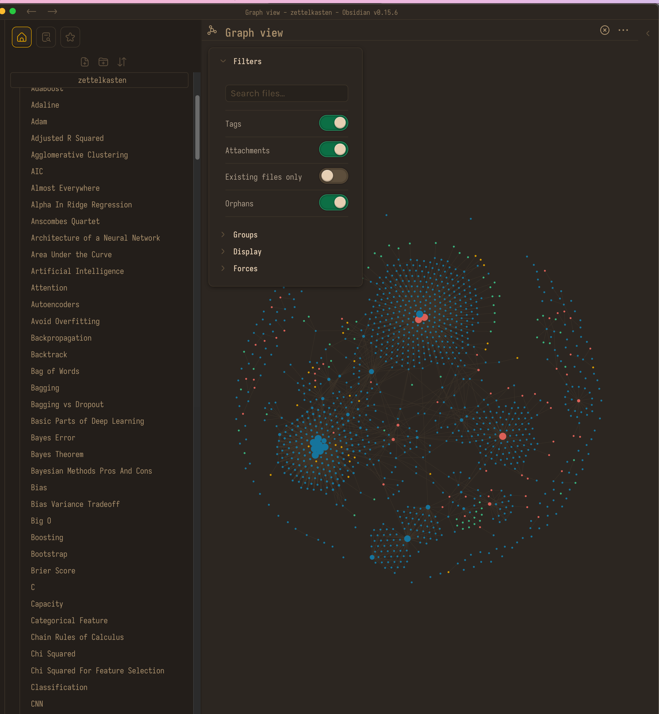

“Making a full sentence is pretty difficult for the brain.” - Something I learned from one of the great Andrew Huberman podcasts.
I am no trained psychiatrist, but I have an intuition that writing probably makes thinking process easier by taking certain amount of load off from the prefrontal cortex.
Writing & Being Perfect
I was never good at writing or taking notes. It always took me an awful lot of time get started with any form of writing. Probably I was or still am a perfectionist, and I always wanted to get things right the first time. > Perfectionism stems from the fear of our mortality. - Susan > Cain, Lex Fridman Podcast
Our brain works by punishing the loss and rewarding the gains. Making mistakes could be detrimental to our survival in the early stages of human existence, and we always receive negative feedbacks from supervisors or peers for our mistakes. Thus we avoid errors, mistakes, or failures at any cost.
Fear of failure could be the major hindrance to our productivity, but in reality failure, or errors are the norm. Getting things right is just rare. If I learned anything in my life, it would be thinking in terms of errors. Our brain hardly predicts anything correctly, nor our actions match the expectations. So let’s modify the optimization target. “We are bound to miss, but we can try to minimize the negative margins.(or increase the positive margins)”
How to Take Smart Notes
I think learned a few things after reading the book. How to Take Smart Notes (affiliated).

It officially introduced me to the concept of Zettlekasten (slipbox, backlinks).
Main philosophy:
- Rather taking a top to down approach to writing (think everything through at the start), start from taking random notes, then when think you are ready you can connect the dots and complete the writing (bottom to top).
Actionable Steps:
- do your research
- take notes into slipbox whenever you find something interesting
- reorganize your notes from slipbox with backlinks into different category or subtopics
- construct the drafts from previously organized notes
Here is how I interlink different notes in Obsidian. 
Zettelkasten Apps
There are a lot of tools that can implement Zettelkasten notes. I personally use Obsidian for note taking, cause I prefer saving notes locally.
Obsidian also offers a lot of other features like:
- VIM mode support
- Daily Journal
- Templates
- Customizable Shortcuts
- Customizable UI,
- ….
I want to write a book. I already started taking notes with Zettelkasten method. I will write a post every day.